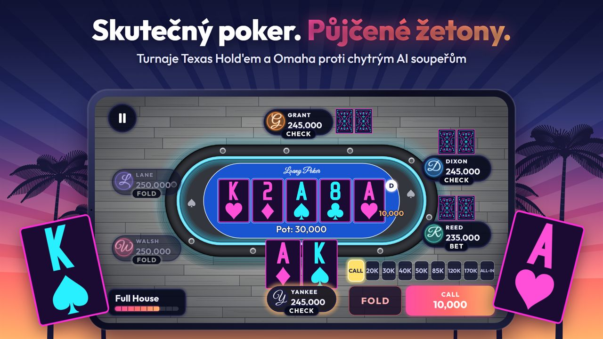
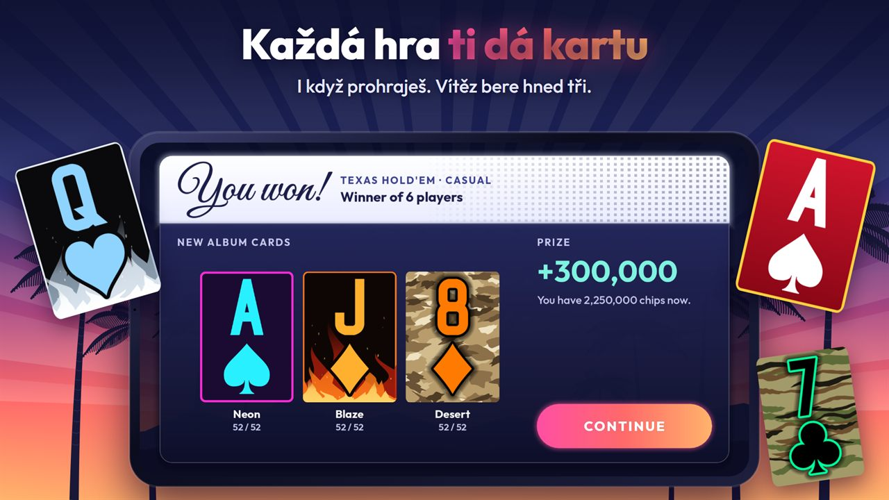
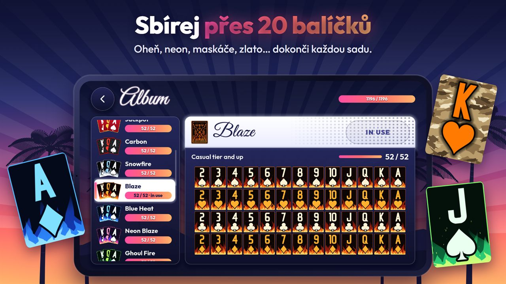
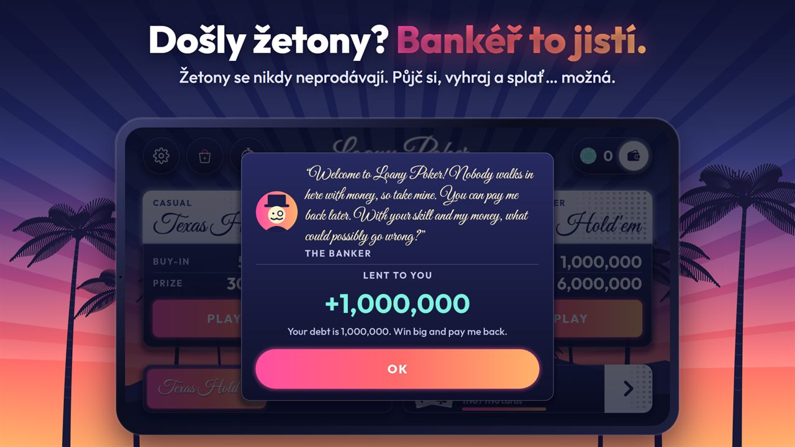
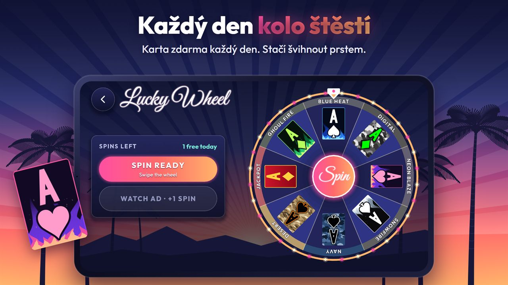
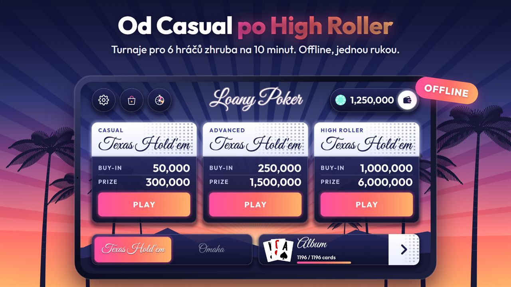

Loany Poker
Skutečný poker. Půjčené žetony.
Turnaje Sit & Go v Texas Hold'em a Omaha proti chytrým AI soupeřům. Každá hra ti dá kartu, sbírej krásné balíčky a udrž Bankéře v dobré náladě… nebo ne.
18+ · simulovaný hazard, žádné skutečné penízePoker, který hraješ pro sbírku

Hold'em a Omaha
Turnaje Sit & Go pro 6 hráčů, zhruba na 10 minut. Offline a jednou rukou.

Karta z každé hry
I když prohraješ. Vítěz bere hned tři.

Přes 20 balíčků
Oheň, neon, maskáče, zlato… dokonči každou sadu a hraj s kartami, které vlastníš.

Bankéř to jistí
Žetony se nikdy neprodávají. Půjč si, vyhraj a splať… možná.

Kolo štěstí
Karta zdarma každý den. Stačí švihnout prstem.

Od Casual po High Roller
Hraj o vyšší vklady, sleduj čisté jmění a splať dluh se stylem.
Jen herní peníze
- Žetony nemají skutečnou hodnotu. Nejde je koupit, prodat ani vyplatit.
- Ve hře se nehraje o skutečné peníze ani o ceny.
- Koupit jde jen kosmetické balíčky karet a vypnutí reklam.
- Pro dospělé (18+). Úspěch v simulovaném hazardu neznamená úspěch ve skutečném.